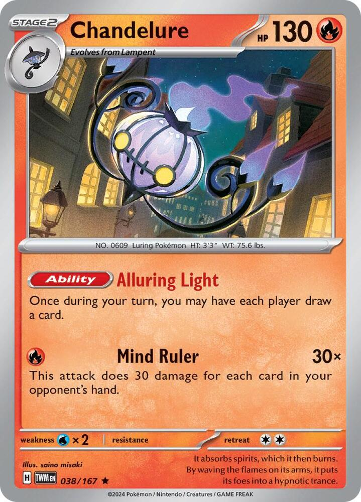
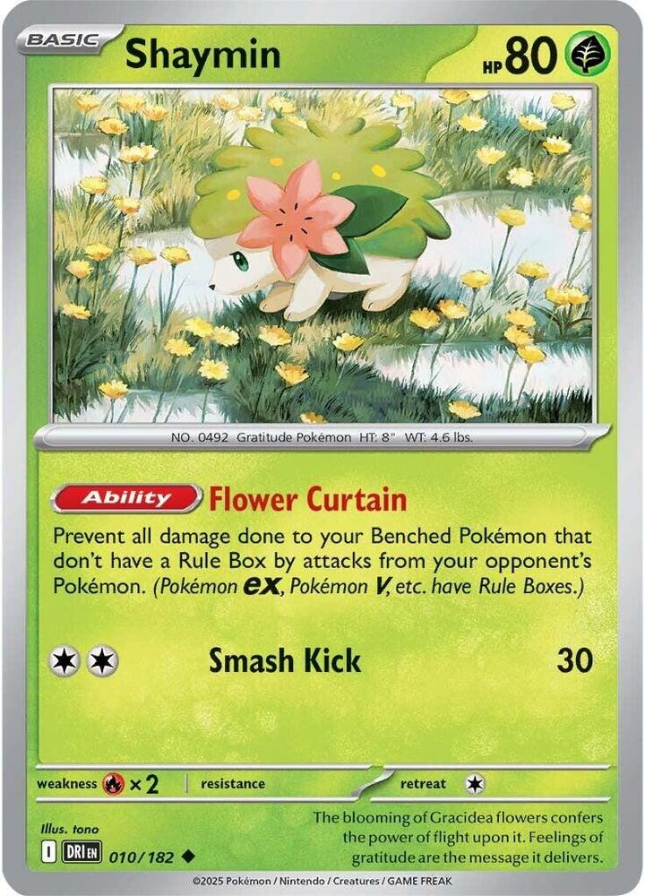
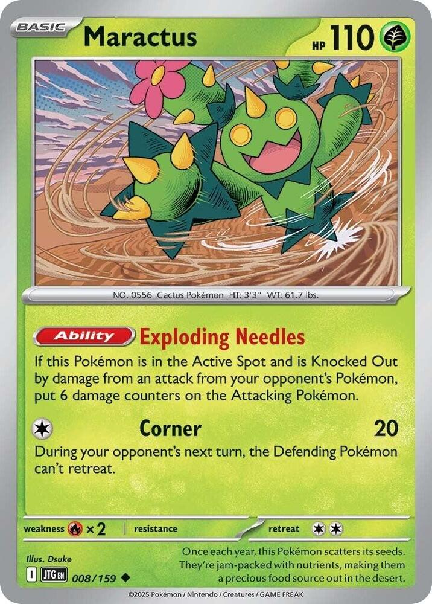
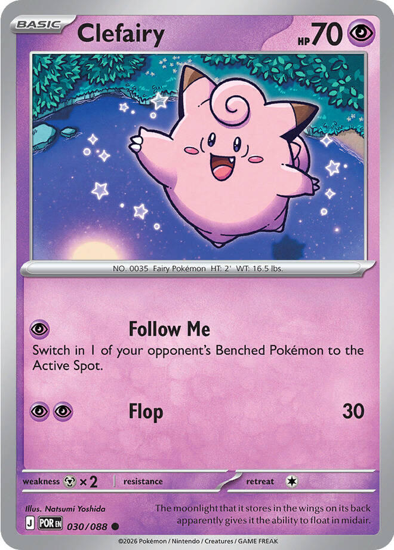
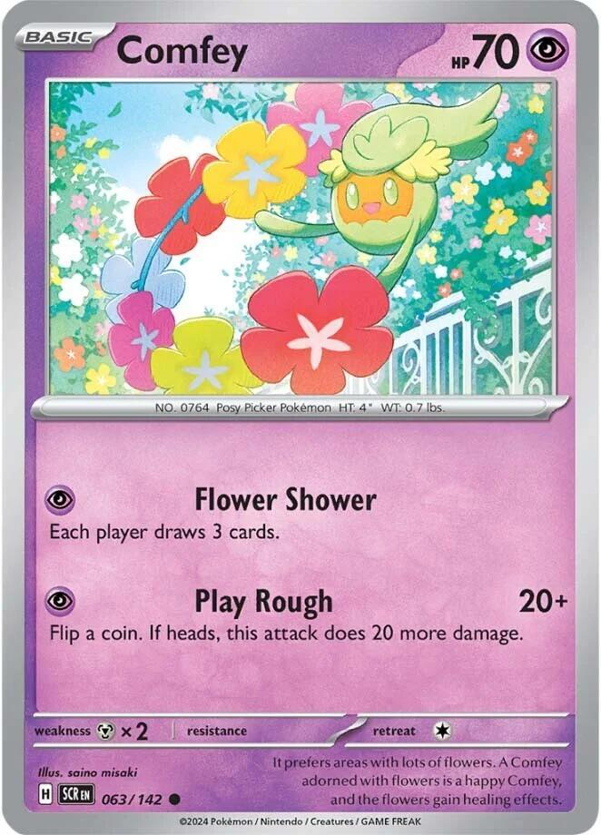
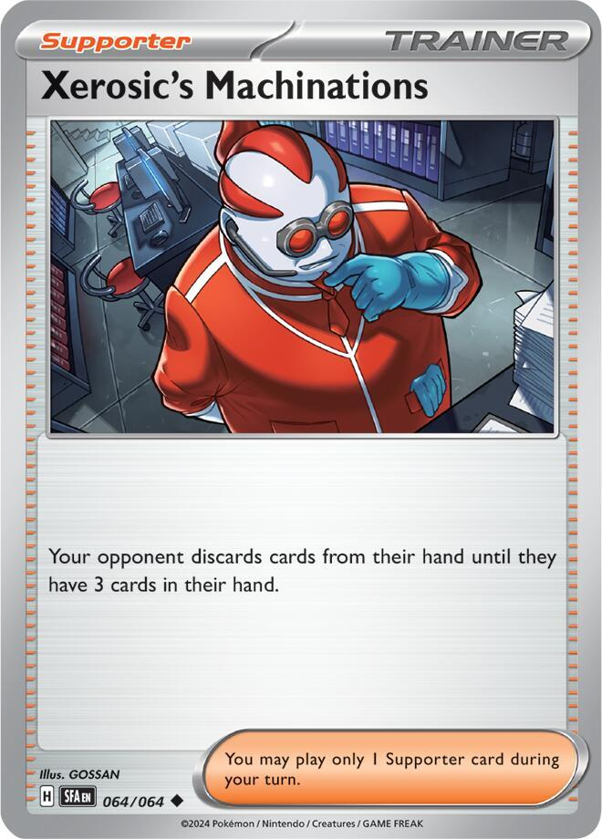
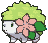
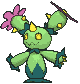
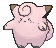
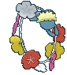

x4
x4 x4
x4
x4 x3
x3




![Boss's Orders [Ghetsis]](./assets/654453_bosss-orders-ghetsis.jpg) x4
x4 x3
x3 x3
x3 x2
x2
x2 x4
x4 x3
x3 x2
x2 x2
x2 x2
x2
 x2
x2 x4
x4 x3
x3 x3
x3 Xero's Flaming Lanterns
Xero's Flaming Lanterns 

The lantern chassis, third face · the archetype's winning shape with a match lit under it
← back to all decksThis deck is the one build in the house that started from tournament evidence rather than the binder, so the receipts come first.
The 4-4-4-3 line is the archetype's winning shape. Two verified results lists on Limitless online play run it card for card: Shoei's 7-2-0 (3rd of 119, SEASAC League Challenge) and GCampa's 6-1-0 (10th of 220). Both run 4 Litwick, 4 Lampent, 4 Fire Chandelure, 3 Mega Chandelure ex, a bench of single-prize tech Basics, zero Stadiums, and a 4 Telepathic / 3 Psychic / 3 Fire energy base. This 60 is Shoei's list at roughly 95 percent fidelity; every deviation is named in What To Buy.
"Chandelure" and "Mega Chandelure ex" are different names. Separate 4-copy caps, and both evolve from Lampent, so one Spreading Light stocks a Bench where every Lampent is two different threats. The fork is the deck: a 3-Prize 350 HP trap and a 1-Prize hand-reader growing out of the same row.
Alluring Light is symmetric, and the winners run it anyway. Every activation hands the opponent a card too. The list pays that price because the fed card pumps Mind Ruler while it sits in their hand, and because Xerosic's Machinations takes the surplus back; game plan 2 is the discipline that keeps the engine from arming the other side.
One owned substitution beat the meta's card. The verification pass replaced Shoei's Elgyem with the collection's own Marshadow, whose Shadowy Knot scales with Binding Flame the way everything else here does. It is the only slot where this list knowingly diverges from the evidence, and the math note is on the card.
x4x4
x4x3



x4x3x3x2
x2x4x3x2x2x2x2x4x3x3Pokémon (20)
| Qty | Card | Set | Number | Reg |
|---|---|---|---|---|
| 4 | Litwick | Pitch Black | 036 | J |
| 4 | Lampent | Pitch Black | 037 | J |
| 4 | Chandelure | Twilight Masquerade | 038 | H |
| 3 | Mega Chandelure ex | Pitch Black | 038 | J |
| 1 | Shaymin | Destined Rivals | 010 | I |
| 1 | Maractus | Journey Together | 008 | I |
| 1 | Marshadow | Pitch Black | 040 | J |
| 1 | Clefairy | Perfect Order | 030 | J |
| 1 | Comfey | Stellar Crown | 063 | H |
Trainers — Supporters (14)
| Qty | Card | Set | Number | Reg |
|---|---|---|---|---|
| 4 | Boss's Orders [Ghetsis] | Mega Evolution | 114 | I |
| 3 | Lillie's Determination | Mega Evolution | 119 | I |
| 3 | Hilda | White Flare | 084 | I |
| 2 | Dawn | Phantasmal Flames | 087 | I |
| 2 | Xerosic's Machinations | Shrouded Fable | 064 | H |
Trainers — Items (14)
| Qty | Card | Set | Number | Reg |
|---|---|---|---|---|
| 4 | Poke Pad | Perfect Order | 081 | J |
| 3 | Night Stretcher | Shrouded Fable | 061 | H |
| 2 | Buddy-Buddy Poffin | Temporal Forces | 144 | H |
| 2 | Ultra Ball | Mega Evolution | 131 | I |
| 2 | Rare Candy | Mega Evolution | 125 | I |
| 1 | Prime Catcher | Prismatic Evolutions | 119 | H |
Trainers — Tool (2)
| Qty | Card | Set | Number | Reg |
|---|---|---|---|---|
| 2 | Air Balloon | Ascended Heroes | 181 | I |
Energy (10)
| Qty | Card | Set | Number | Reg |
|---|---|---|---|---|
| 4 | Telepathic Psychic Energy | Perfect Order | 088 | J |
| 3 | Basic Psychic Energy | Mega Evolution Energies | 005 | - |
| 3 | Basic Fire Energy | Mega Evolution Energies | 002 | - |
20 + 14 + 14 + 2 + 10 = 60. ✓
Basics: 9 (4 Litwick, Shaymin, Maractus, Marshadow, Clefairy, Comfey), which is a 30% mulligan rate, the worst number in the house and the price the whole archetype pays for its evolution density; the winning lists run the same nine. Litwick, Clefairy, and Comfey are Poffin-legal at 70 HP, and every Psychic Basic rides Telepathic's bench rider, Marshadow included. Test and Tune watches this number first.


 Psychic
Psychic Darkness ×2
Darkness ×2 Fighting -30
Fighting -30 1
1 legal (Reg J)Will-O-Wisp (20)
legal (Reg J)Will-O-Wisp (20)The Basic the chassis stands on, and the only Psychic Litwick ever printed. The Fire prints in the binder cannot pay Spreading Light or Phantom Maze, so even in the deck named for fire, the seed stays Psychic. 70 HP keeps it inside Poffin range.

 PsychicDarkness ×2Fighting -301legal (Reg J)Spreading Light - Search your deck for up to 3 Lampent and put them onto your Bench. Then, shuffle your deck.
PsychicDarkness ×2Fighting -301legal (Reg J)Spreading Light - Search your deck for up to 3 Lampent and put them onto your Bench. Then, shuffle your deck.Spreading Light stocks the fork: search your deck for up to 3 Lampent and bench them, and every one is a choice next turn between a 1-Prize hand-reader and a 3-Prize trap. The full four here, the fattest Lampent count in the house, because this deck evolves naturally more often than it Candies; two Rare Candy is all the list carries.


 Fire
Fire Water ×22legal (Reg H)Mind Ruler (30x) - This attack does 30 damage for each card in your opponent's hand.
Water ×22legal (Reg H)Mind Ruler (30x) - This attack does 30 damage for each card in your opponent's hand.The reason the deck exists, and the card the house always owned in the wrong type. Stage 2 from Lampent, Fire, 130 HP, one Prize.
Alluring Light: once during your turn, each player draws a card. Four copies in play is four activations a turn, which is a draw engine no Supporter matches, running on bodies that cost the opponent almost nothing to Knock Out. The symmetry is real and priced in; game plan 2 is the rulebook.
Mind Ruler does 30 for each card in the opponent's hand, for a single . Every card your engine feeds them is 30 damage while they hold it, Xerosic's Machinations floors it at 90, and an opponent who just refilled to seven takes 210 from a one-Prize body. The house's Darkness decks hit this card for neutral, which makes it the one lantern that does not trade down at the kitchen table.
 PsychicDarkness ×2Fighting -302legal (Reg J)Phantom Maze (130+) - This attack does 50 more damage for each Retreat Cost.
PsychicDarkness ×2Fighting -302legal (Reg J)Phantom Maze (130+) - This attack does 50 more damage for each Retreat Cost.Stage 2 from Lampent. Gives up 3 Prize cards. The same 350 HP trap that anchors Phantom Toll: Binding Flame makes the opponent's Active's Retreat Cost 1 more, it stacks per copy, and Phantom Maze pays 130 plus 50 for each of that inflated cost. Here it is the heavy register rather than the whole song; two on the board is plus 2 and plus 100, and the third copy stays in the deck as insurance, not on the Bench as three free Prizes.


 GrassFire ×21legal (Reg I)Smash Kick (30)
GrassFire ×21legal (Reg I)Smash Kick (30)Flower Curtain: prevent all damage done to your Benched Pokémon without a Rule Box by attacks from your opponent's Pokémon. Everything on this Bench except the Mega qualifies, so attack-based snipes and spread attacks stop collecting cheap Prizes off the Litwick row. The honest limit: placed damage counters are not attack damage, so Phantom Dive and Cursed Blast-style effects sail straight through; the Curtain stops attacks and nothing else. 80 HP, Grass, outside Poffin range; Ultra Ball and Poke Pad carry it. In Shoei's list, and on notice here: if attack-snipe decks stop showing up at the shop, this is the first slot the tune table reclaims.

 GrassFire ×22legal (Reg I)Corner (20) - During your opponent’s next turn, the Defending Pokémon can’t retreat.
GrassFire ×22legal (Reg I)Corner (20) - During your opponent’s next turn, the Defending Pokémon can’t retreat.Exploding Needles: if this Pokémon is Active and Knocked Out by an attack, 6 damage counters land on the attacker. A 110 HP Grass wall that makes the opponent's cleanup swing cost them 60, and Corner pins whatever is up front for a turn, which reads very well next to Phantom Maze. The opener the deck parks in front while the Bench assembles; it retreats for 2, so its exit plan is usually the opponent's Knock Out, and the Needles make them pay the fare.
 PsychicDarkness ×2Fighting -301legal (Reg J)Shadowy Knot (30x) - This attack does 30 damage for each Retreat Cost.
PsychicDarkness ×2Fighting -301legal (Reg J)Shadowy Knot (30x) - This attack does 30 damage for each Retreat Cost.The one deliberate deviation from the meta list, and it is owned. Shadowy Knot does 30 for each in the opponent's Active's Retreat Cost, so it reads the same inflated number Phantom Maze reads: 90 into a Retreat-2 target under one Flame, for one , from a one-Prize body. The verification pass rated the meta's Elgyem the weakest tech in the shell and this the strictly better owned card. 90 HP, so Telepathic fetches what Poffin cannot.

 Psychic
Psychic Metal ×21legal (Reg J)Follow Me - Switch in 1 of your opponent's Benched Pokémon to the Active Spot.Flop (30)
Metal ×21legal (Reg J)Follow Me - Switch in 1 of your opponent's Benched Pokémon to the Active Spot.Flop (30)Follow Me: switch in one of the opponent's Benched Pokémon, as an attack, for one . A gust on a searchable one-Prize Basic, which means the deck can spring the Maze trap on a turn the Supporter slot went to draw. Flop is filler; the attack that matters costs one Energy and their best-laid Bench.

 PsychicMetal ×21legal (Reg H)Flower Shower - Each player draws 3 cards.Play Rough (20+) - Flip a coin. If heads, this attack does 20 more damage.
PsychicMetal ×21legal (Reg H)Flower Shower - Each player draws 3 cards.Play Rough (20+) - Flip a coin. If heads, this attack does 20 more damage.Flower Shower: each player draws 3 cards, for one . Force-feeding at scale: plus 90 to next turn's Mind Ruler ceiling while refilling your own hand, off a 70 HP Poffin-legal body. The same symmetry caveat as Alluring Light, tripled; use it the turn before the Ruler swings, not on reflex.
 legal (Reg I)
legal (Reg I)Switch in 1 of your opponent's Benched Pokémon to the Active Spot. The full four, the deck's biggest Supporter line, because both registers convert it: the Maze prices whatever gets dragged up, and the Ruler does not care who is standing there. The Ghetsis print, shared across the house.
legal (Reg I)Shuffle your hand into your deck and draw 6; at exactly 6 Prizes remaining, draw 8. Three copies as the reset button, because Alluring Light does the steady drawing here; Lillie's is for hands the engine cannot fix, and the shuffle half sends spare Stage 2s back where Hilda can find them.
 legal (Reg I)
legal (Reg I)Search your deck for an Evolution Pokémon and an Energy card. The Mega plus a Telepathic, or a Fire Chandelure plus the Fire that arms it, off one Supporter; the second fetch mode matters here more than in any other lantern build, because Hilda is the deck's only Fire Energy search.
 legal (Reg I)
legal (Reg I)Search your deck for a Basic, a Stage 1, and a Stage 2, all to hand. One card assembles a whole lantern column, and the Stage 2 slot picks the register: the trap or the reader. Two copies against four owned; the Gang sleeves three, so one copy crosses over on swap nights.
 legal (Reg H)
legal (Reg H)Your opponent discards down to 3 cards in hand. Read the two jobs in order. It is disruption, stripping the Rare Candy hand your own Alluring Light helped them bank. And it is a clamp, not a floor: it cuts a fat hand to exactly 3, does nothing to a thin one, and whatever they spend before your swing still comes off the Ruler's count. The honest anti-synergy: casting it the same turn the Ruler swings caps the attack at 90, so it is a between-swings card, never a same-turn card. Every winning list runs 2 or 3.
legal (Reg J)Search your deck for a Pokémon without a Rule Box, which here is 17 of 20 Pokémon, the evolved Fire Chandelure included. The full four owned copies, the deck's primary search line, exactly as both meta lists run it. The card is printed Poké Pad; the database drops the accent, and so does this page.
legal (Reg H)Put a Pokémon or a basic Energy card from your discard pile into your hand. Three copies, the deck's recovery and its second Fire fetch; it rebuys the basic Fire that went down with a Chandelure, and never the Telepathic.
 legal (Reg H)
legal (Reg H)Bench up to 2 Basic Pokémon with 70 HP or less. Only two copies, the lightest Poffin count in the house, because Telepathic's rider does this job while paying an attack cost; Litwick, Clefairy, and Comfey are the legal targets.
legal (Reg I)Discard 2 other cards, search for any Pokémon. The unconditional line that lifts what Poffin and Poke Pad cannot: the Mega, Shaymin, Maractus. Pitch spare Fire late, and remember Night Stretcher reads the discard.
legal (Reg I)Litwick straight to either Stage 2. Only two, because Spreading Light makes natural evolution the main road; the Candies exist for the games that need a turn-2 Mega, and the usual riders bite, never turn one and never on a fresh Basic.

 ACE SPEC Rarelegal (Reg H)
ACE SPEC Rarelegal (Reg H)The ACE SPEC. Their Bench to the Active Spot, your Active to your Bench, one Item. Gusts five and six after the four Boss's, and the self-switch half rescues a wounded Mega into the row of waiting attackers. Legacy Energy wants this slot; Test and Tune says when it wins the argument.
No Stadium, matching both meta lists; the slot budget went to the Bench techs, and the deck concedes the Stadium war on purpose.
 legal (Reg I)
legal (Reg I)Retreat 2 less. Two copies split between the Active Mega, whose Retreat 2 becomes free, and a Fire Chandelure that wants to step out after a Ruler swing. One copy is the owned English print freed from the lanterns; the second is a 23-cent buy, because the two starter-set copies are Japanese and stay home.
Energy. When you attach this card from your hand to a Pokémon, search your deck for up to 2 Basic Pokémon and put them onto your Bench. Then, shuffle your deck.legal (Reg J)An Energy that is also a double Poffin with no HP cap: attach from hand to a Psychic Pokémon, bench up to 2 Basic Psychic from the deck, Marshadow included. It attaches to anything legally, but the rider fires only on a Psychic target, and it can never pay Mind Ruler's . Special, so nothing recovers it. All four copies, shared with the sibling builds.
legalThree copies beside the four Telepathic, seven sources for a main attack. These are what Night Stretcher rebuys; the renewable half of the Psychic line.
legalThree cards carry the whole second register. Mind Ruler costs exactly one , so one Fire on a fresh Chandelure is a live attacker the turn it evolves, but three copies in 60 with Hilda and Night Stretcher as the only fetches is genuinely thin, and a prized pair turns the deck into a pure Maze list. The free fix, a fourth Fire over the third Psychic, is first in line if testing shows it.

Mind Ruler does 30 for each card in the opponent's hand at attack time. The deck's two feeders raise that number; Xerosic's sets its floor; the cards they play before your turn come off the total.
| Their hand when the Ruler swings | Damage | How it gets there |
|---|---|---|
| 3 | 90 | the hand Xerosic's leaves behind |
| 5 | 150 | a natural refill, or an Ariana-style draw-to-5 |
| 7 | 210 | opening-hand size, or Alluring Light generosity |
| 8+ | 240+ | Flower Shower stacked on the Lights |
The Maze reads the other ledger, same as its sibling deck: 130 plus 50 per of an Active taxed by every Flame in play. One Flame prices a Retreat-2 target at 280; two Flames price it at 330 and a dragged Retreat-3 tank at 380. Two registers, two ledgers, and the opponent has to play against both at once: empty their hand and the Maze traps them, hold cards to develop and the Ruler reads them.
One line, two attackers, and the matchup decides the mix.
| The game state | Lead | Why |
|---|---|---|
| Heavy bodies, retreat-clumsy Benches | Mega Chandelure | The Maze prices what Boss's drags; 280-380 into anything worth 2-3 Prizes. |
| Draw-hungry engines, big hands | Chandelure | The Ruler reads their hand for 150-240 off a one-Prize body they hate spending a big attack on. |
| The house Darkness decks | Chandelure | The only lantern that takes Darkness for neutral; everything else here trades down at ×2. |
| Free-retreat pivots | Chandelure, plus patience | The Maze floors at 180; the Ruler never cared about retreat. Gust their pivot when it matters. |
The registers share everything: one Lampent row, one energy base for the Maze, one Fire for the Ruler. The skill is not building both; it is noticing which one this opponent cannot answer, then feeding that one.
Alluring Light is an engine with a loaded exhaust pipe. Run it deliberately.
Turn two, if the board allows: Lampent Active, one , Spreading Light, up to 3 Lampent from the deck to the Bench. Next turn that row evolves into whatever mix of registers the game wants, no Candy spent. Fetch what you can seat; with Shaymin due a Bench spot and the tech Basics arriving off Telepathic, two Lampent is the usual right number.
The flood is why the deck survives on 2 Poffin and 2 Candy where its siblings run 4 and 4. The evolution engine is an attack, and the deck budgets a whole early turn for it.
Three cards, one job, zero slack. The Ruler's arrives three ways: the manual attachment on a turn the Psychic side is already fed, Hilda fetching a Chandelure and the Fire together, or Night Stretcher rebuying a spent one. The discipline is not attaching Fire early; it is attaching Fire to the second Chandelure while the first still stands, so the register never goes dark. A Fire in hand with no Chandelure is a hold, not an attach.
Step one, do you have a Basic? At 9 Basics you mulligan three games in ten. It is the archetype's tax; dig without shame.
The first attachment defaults Psychic. Fire waits for a Chandelure to exist; see The Fire Drop.
 it provides can never pay Mind Ruler.
it provides can never pay Mind Ruler.Current Standard, per Limitless play data, August 2026. This deck is the house's first that IS a meta deck, so the table reads differently: these are its own results and its known predators.
| Deck | Share | This deck's view of it |
|---|---|---|
| Mega Chandelure (this archetype) | posting 3rd/119 and 10th/220 finishes | The mirror is a Binding Flame race; the Ruler decides it, because the mirror's hand is always full. |
| Dragapult variants | ~18% | Phantom Dive places counters, and placed counters sail through Flower Curtain, so the flood loses bodies anyway. Win it on the prize ledger instead: their attackers pay 2-3 apiece while the Ruler pays 1, and a Dive deck's held hand is readable. |
| Single-prize rooms | ~25% | The Mega stays boxed, the Ruler and the techs trade one for one, and Xerosic's strips their engine. Fair games this house's other decks concede. |
| Fighting rooms (Mega Excadrill, Lucario) | ~10% | The whole lantern side resists Fighting; the Grass techs eat the hits the lanterns cannot. |
| Darkness rooms | ~10% | The bad seat. Twelve of twenty bodies take ×2; the Ruler alone hits back for neutral. Phantom Toll is the sibling built for these rooms; sleeve accordingly. |

Fox's Team Rocket's Mewtwo. His deck refills its hand professionally: Ariana draws to 5 or 8, Factory pays out 2 more. Every one of those refills is Mind Ruler ammunition; a post-Ariana swing reads 150 to 240 off a one-Prize Chandelure his 160-damage answers overkill. Mewtwo ex retreats for 3, so one Flame makes the Maze 330 into a 280 HP body when the trap register takes a turn. The game where both of this deck's ledgers stay full.
Fox's Flareon ex. His Fire hits the lanterns neutral, the Fire Chandelure neutral too (its Weakness is Water), and the Grass techs for double, so Shaymin and Maractus mostly stay in hand this game. Nothing he has one-shots a healthy 350, which makes his math two-turn math while one Flame prices his Retreat-2 attackers at 280. An honest damage race the Maze wins on arithmetic, with the Ruler reading his setup turns.
Fox's Sun and Moon. Moon Mirage doubles into every Psychic lantern; the Fire Chandelure takes it neutral and answers for one Prize. Still a hard game, and the sibling deck was purpose-built for it; this one plays it as Ruler-plus-techs and respects the ×2 everywhere else.
Xero's dark decks. The known predator. Sleeve this deck at the table when the Gengars are resting; when they are not, twelve Dark-weak bodies is a donation. That is not a flaw to fix; it is the rock-paper-scissors the house runs on.

Hand-dump decks blank the Ruler. A disciplined opponent who ends every turn at 0-2 cards caps Mind Ruler below 90 with no Xerosic's floor to save it, and the deck becomes a pure Maze list. Those games exist; win them on the trap register and stop feeding the Lights.
Ability lock hurts three ways. Alluring Light, Binding Flame, and Flower Curtain all die together; the deck falls back to raw Maze-at-printed-retreat plus Ruler-at-natural-hand. Respect any deck that can switch Abilities off.
Ruffian discards a Tool and a Special Energy from one of your Pokémon in a single Supporter, and the Balloon Mega holding a Telepathic is the worst-case target; attach Telepathic to bodies that already did their fetching.
Fast aggro on the seeds. A 200-damage turn-two opener that Bosses a Litwick is this archetype's universal tax; the 30% mulligan makes slow starts real. Poffin early, flood on schedule, and lean on Maractus to make the tempo cost them something.

The list is a hypothesis; games are the data. Symptoms and their fixes:

The cheapest real deck the house has ever stood up: everything structural is already owned and shared with the sibling lantern builds, and the entire purchase is eleven commons for about $2.15. The shared rows below live in one physical set of sleeves with Phantom Toll; the two decks cannot be sleeved at once, and these pages are the swap sheets. Own counts are live from the collection database.
| Card | Own | Need | Buy | Note |
|---|---|---|---|---|
| 10 | 4 | ✓ | the Psychic print; shared lantern chassis |
| 9 | 4 | ✓ | shared lantern chassis |
| 0 | 4 | 4 | the Alluring Light print, ~18 cents a copy; the whole reason |
| 4 | 3 | ✓ | shared lantern chassis; 4 owned across the sibling builds |
| 0 | 1 | 1 | Flower Curtain; ~30 cents |
| 0 | 1 | 1 | Exploding Needles; ~15 cents |
| 2 | 1 | ✓ | owned; the deliberate Elgyem replacement |
| 0 | 1 | 1 | Follow Me; ~8 cents |
| 0 | 1 | 1 | Flower Shower; ~11 cents |
| 10 | 4 | ✓ | shared |
| 11 | 3 | ✓ | shared |
| 7 | 3 | ✓ | shared |
| 4 | 2 | ✓ | the Gang sleeves 3 of the 4 owned; one crosses over |
| 0 | 2 | 2 | the Mind Ruler floor; ~27 cents a copy |
| 4 | 4 | ✓ | printed Poké Pad; the database drops the accent |
| 10 | 3 | ✓ | shared |
| 9 | 2 | ✓ | shared |
| 10 | 2 | ✓ | shared |
| 10 | 2 | ✓ | shared |
| 1 | 1 | ✓ | ACE SPEC; the PRE copy, freed when the lanterns came apart |
| 1 | 2 | 1 | one owned; the second is a 23-cent buy, the starter copies are Japanese |
| 4 | 4 | ✓ | shared; Special, nothing recovers it |
| Basic Psychic Energy MEE: Mega Evolution Energies 5 | 27 | 3 | ✓ | never rotates |
| Basic Fire Energy MEE: Mega Evolution Energies 2 | 18 | 3 | ✓ | the Ruler's whole diet |
| Total to buy | 11 |